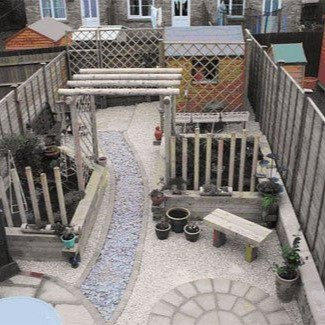
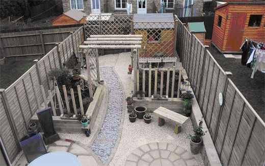
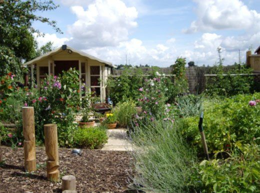
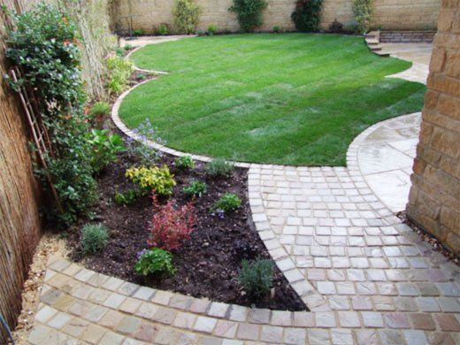
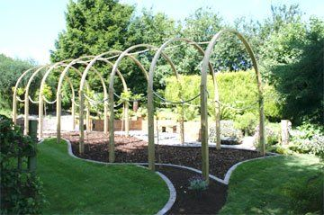
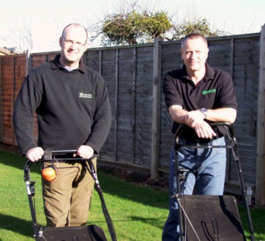
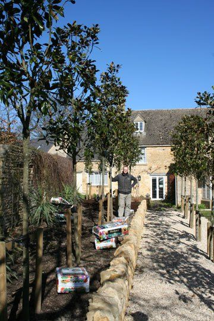

Need some garden design ideas?
Call Castle Acre today, on 01386 760 076 or 07789 204 240
Looking for a winter blah de blah?
Call Castle Acre today, on 01386 760 076 or 07789 204 240
Need some garden design ideas?
Call Castle Acre today, on 01386 760 076 or 07789 204 240

Garden visits, advice and design
From basic working sketch to a technical scale plan
Garden maintenance
We can come to you and help with problem areas, inspiration, pests and diseases or planting schedules
Plant source and supply
We can come to you and help with problem areas, inspiration, pests and diseases or planting schedules
Why choose Castle Acre?
We have years of practical experience in all areas of horticulture, backed by professional qualifications at the highest level, along with membership and recognition of the key trade associations.
We offer a range of services and skills to help you get the best from your garden. These include;
In short, we deliver, Total Garden Solutions.
Landscape design
We offer a unique and practical design service
Following a garden visit and fact find, we will which will provide you with a scale working plan of your garden.
We are specialists in ‘soft landscaping’ - planting schemes and plans, border creation and particularly difficult areas where it is hard to get things to grow.
Our plant knowledge and experience helps us to provide you with a tailor made solution that also meets your expectations of ongoing maintenance and care.
We can source and supply, and even plant your plants for you to ensure the whole service is smooth and hassle free.

Landscaping
We can enhance your existing layout or produce a complete change for the whole garden. Maybe you have a problem corner that needs inspiration, or more places to sit and relax in your ‘outdoor room’. garden design - Evesham - Castle Acre - soft landscaping We can help you realise the full potential of your garden. Some of the services and skills we offer include:
- Low maintenance gardens
- Decking
- Raised beds
- Turfing
- Border Creation
- Plant source, supply and planting
- Screening solutions
- Hedging and natural screening
- Vegetable gardens
- Grow your own’ beds

Garden visits and advice
Unsure of what to do with your garden or aspects of it? Have a particular spot or problem you need help and advice on? Have you got difficult soil or a recurring pest and disease problem? We offer a garden visit service to call and discuss any aspect of your garden.
A garden visit will usually last up to an hour, and will include a sketch plan (if appropriate) and a list of suggestions for a one off charge. No pressure and no commitment to further work, just simple, professional help regarding anything to do with your garden.
Please note visits for quotations and maintenance work are free of charge.

Full Garden Maintenance (residential)
From specialist maintenance to regular grass cutting, we offer an experienced and knowledgeable service to carefully keep and develop your garden to your satisfaction.
Maintenance can be regular or even holiday cover. Prescriptive maintenance plans can be drawn up to suit any size of garden – no job is too small!. A key holding policy means you do not have to be in attendance when maintenance is carried out. Specialist pruning, hedge cutting, lawn-mowing are just a few of the services we offer, along with refilling of hanging baskets and seasonal beds and tubs.
We can also advise and supply professional composts, soil conditioners and fertilizers.
Pruning and Trimming
Knowing when and how to prune trees and shrubs is a difficult art – and a mistake can harm even the most resilient plant! We can advise on and deliver expert pruning and trimming to ensure your plants achieve maximum health and potential. We also offer a full hedge cutting service.
Weeding and Clearance
Whether you need weekly weeding of your borders, or just a one off tidy up, we can ensure your garden always looks it’s best! We remove all rubbish from site if required, and can co-ordinate skips where appropriate, it is totally hassle free.

Commercial Maintenance
Castle Acre offer a range of commercial grounds maintenance services, tailored to suit your business.
We have full public and employer liability insurance cover, and are fully compliant with all relevant legislation regarding health and safety.
We currently service a range of commercial customers, and would welcome the opportunity to quote for your requirements.

Our Nursery
We have our own small nursery at Knowle Hill in Evesham, where we grow a wide range of plants, specialising in soft fruit and grow your own vegetables
Because we are open by appointment only, we have a delivery service where we can bring the garden centre to you!
Along with our own home produced stock, we can source and supply and even plant for you, anything from the rare and unusual, to large specimens.
Some of our stock that we can deliver to you includes;
- Trees
- Shrubs
- Perennials
- Hedges and windbreaks
- Privacy screening plants
- Grow your own fruit, veg and seed potatoes
- Composts, fertilizers and soil conditioners
- Seasonal bedding, hanging baskets and tubs
